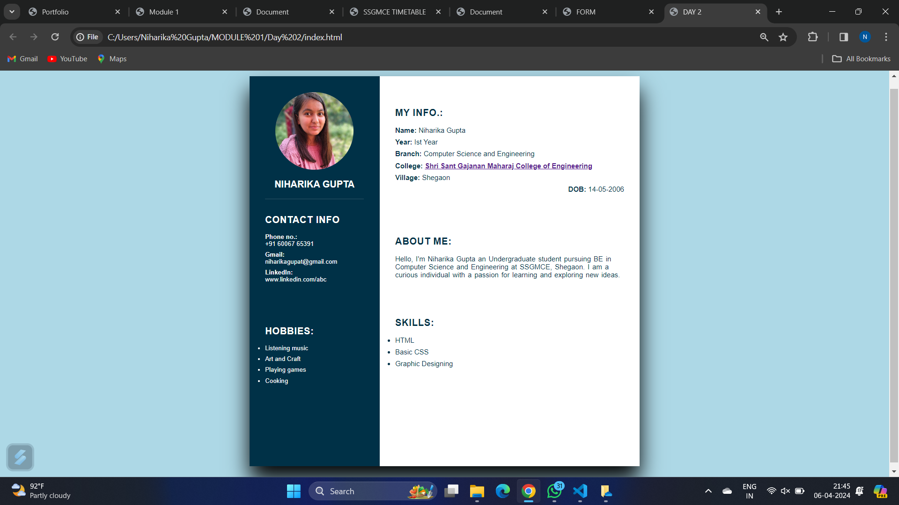
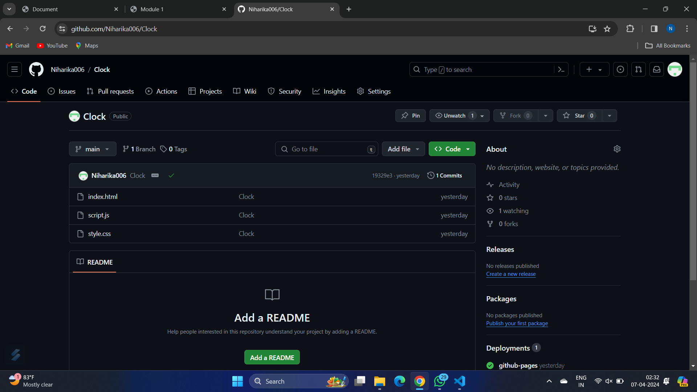
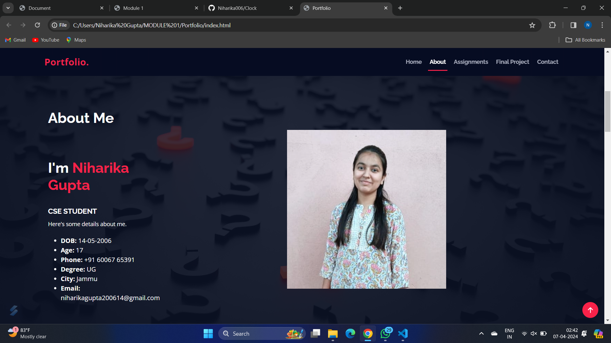
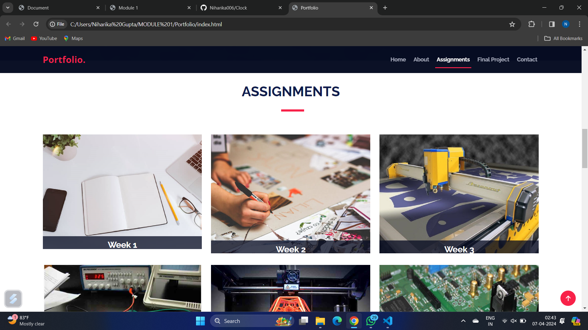
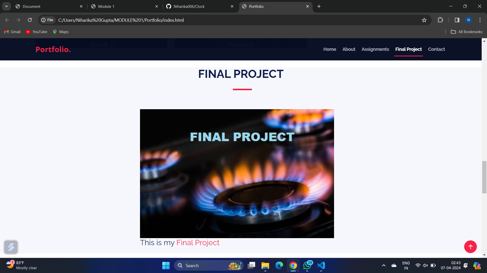
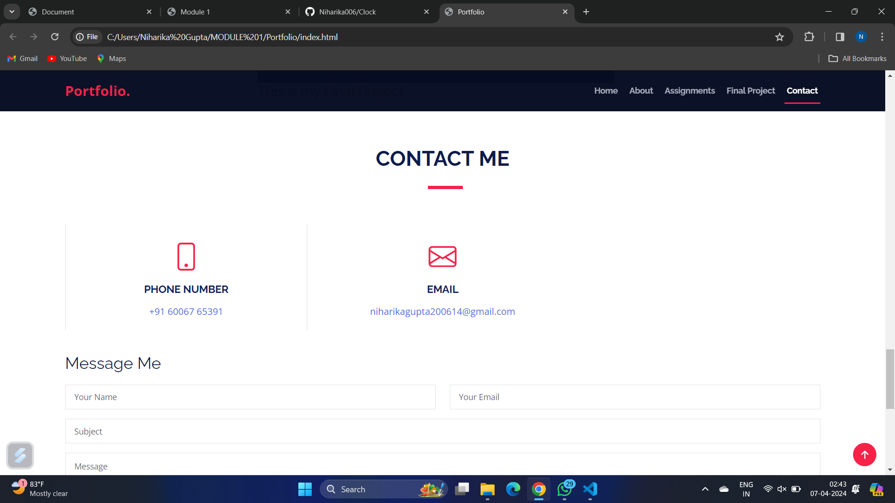
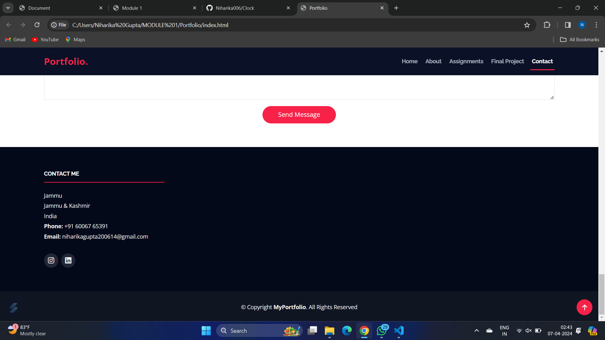

Documentation of Module 1
Web Development
(HTML, CSS & JS)
- The Very First Module Of Our Fablab Was of Web Development Which Includes Understanding Of HTML,CSS And JS.
- Initially, we learnt all the basic tags of HTML along with some basic attributes of CSS. Tags like H1,Img,Form,etc were Used to get simple outputs.
- For styling of the Web Page, we learnt various attributes of CSS such as font weight, text align, margin, flex ,etc
- After Understanding HTML And CSS, We Headed Towards JavaScript. Comparatively, JS Was A Difficult Task To Work On.
- We Learnt Declaring,Defining And Calling Of The Function In The JS. We Used JS In HTML Using /Script> Tag.
- After All This, Our First HomeWork Was To Make An Application Form and A Time Table Using HTML And Basic CSS.
- After This Our Second HW Was To Make A Resume Using HTML And CSS.
- Our Third HW Was TO Make A Working Clock using HTML, CSS And JS.
- Now, This Clock Should Be Available To All. For This, Our Next Step Was To Upload Or Push My Clock On Github. Github Is An Open-Source Platform That Provides Link To Our Website By Uploading Repositories.
- After Acquiring Basic Knowledge About HTML,CSS And JS, Our Objective Was To Make A Personal Portfolio Website And Upload It To Github.










